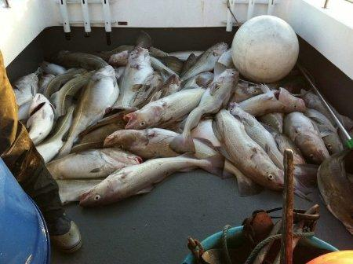
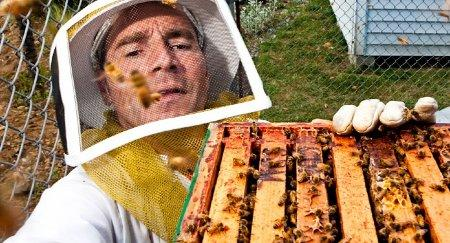
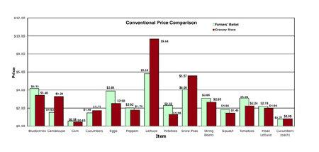

Recommendations
Create an account or
log in
to see what your friends are recommending.

Superb Idea: Pay Fishermen to Catch Trash - Food - GOOD
1,290 people shared this.

The Sustainable Prisons Project: Connecting Inmates with Nature - Politics - GOOD
260 people shared this.

What's More Expensive: Farmers' Markets or Grocery Stores? - Food - GOOD
607 people shared this.
Nine of Out Ten Climate Denying Scientists Have Ties to Exxon Mobil Money - Environment - GOOD
2,008 people shared this.
Facebook social plugin